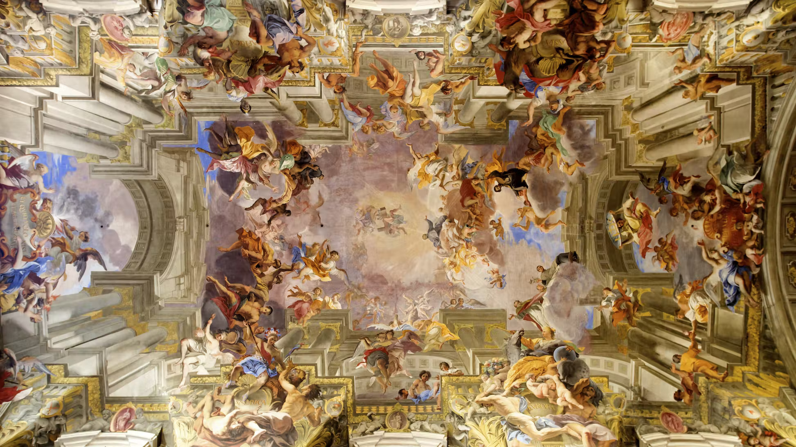

Discover eternal city
Discover eternal city
Chiesa di Sant’Ignazio di Loyola

F lanking a delightful rococo piazza, this important Jesuit church boasts a Carlo Maderno facade and two celebrated trompe l'œil frescoes by Andrea Pozzo (1642–1709). One cleverly depicts a fake dome, while the other, on the nave ceiling, shows St Ignatius Loyola being welcomed into paradise by Christ and the Madonna.
lanking a delightful rococo piazza, this important Jesuit church boasts a Carlo Maderno facade and two celebrated trompe l'œil frescoes by Andrea Pozzo (1642–1709). One cleverly depicts a fake dome, while the other, on the nave ceiling, shows St Ignatius Loyola being welcomed into paradise by Christ and the Madonna. The church was designed by a group of architects chaired by Orazio Grassi (1583-1654), who was a Jesuit priest, mathematician and astronomer. Work began in 1626, four years after the canonisation (March 12th, 1622) of Ignatius di Loyola by the cardinal's uncle, Pope Gregory XV (r. 1621-23). Both cardinal and pope are interred in the church. The church was completed in 1685. The facade sports an inscription in honour of Cardinal Ludovisi: S ⋅ IGNATIO ⋅ SOC ⋅ IESV ⋅ FVNDATORI ⋅ LVD ⋅ CARD ⋅ LVDOVISIVS ⋅ S ⋅ R ⋅ E ⋅ VICE ⋅ CANCELLAR ⋅ A ⋅ DOM ⋅ MDCXXVI. There is a longer inscription to Cardinal Ludovisi on the counter-facade. It is flanked by stucco statues of Religion and Glory, the work of Alessandro Algardi (1598-1654). The inscription is crowned with the Ludovisi coat of arms. A pair of putti seem to be in the act of adding the cardinal's hat! The stunning ceiling fresco in the nave is the work of a lay-Jesuit, Andrea Pozzo (1642-1709), who also painted the fake dome. The real dome was never built, on account of a lack of funds. The pendentives were painted by Pozzo and depict four figures from the Old Testament, namely Judith, King David, Samson and Jael. The paintings in the apse, of scenes from the life of St Ignatius, are also by Pozzo. The fresco in the vault of the half-dome depicts St Ignatius ministering to the plague-stricken. The altarpiece depicts the divine assurance that the saint received in a vision he had in a chapel at La Storta, which lies a short distance to the north of Rome. Pozzo also designed the transept chapels. The matching pair of altars sport monumental barley-sugar columns and large marble bas-reliefs. The relief in the right altar depicts the Glory of St Aloysius Gonzaga and is by the French sculptor Pierre Legros the Younger (1666-1719), while the relief of the Annunciation in the opposite transept is the work of the Florentine sculptor Filippo della Valle (1698-1768). In the Cappella Ludovisi, at the end of the right aisle, is the funerary monument to Pope Gregory XV (r. 1621-23).